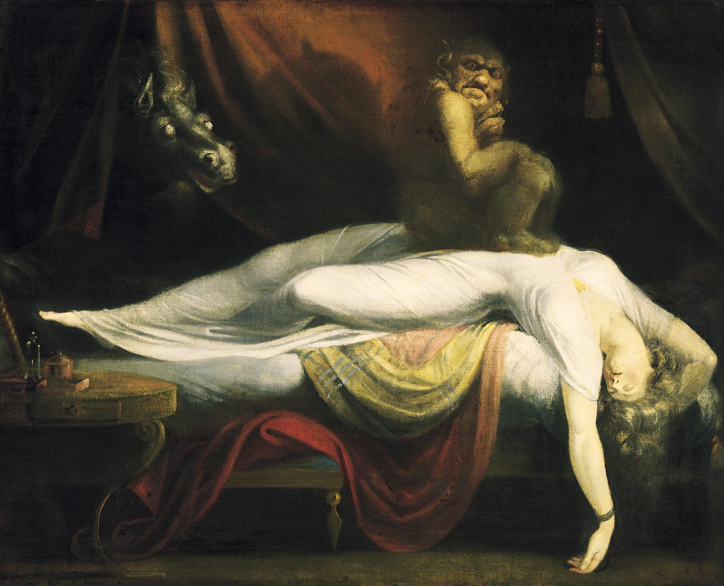

Красные ягоды. Черные птицы.
+T-

Иллюстрация: Генрих Фюссли. Кошмар
Автор стихотворения: Ирина Лапик
Чьи это мысли в твоей голове?
Чёрными птицами, гостем
непрошеным.
Красными нитями в белой канве. Кем они посланы?
Кем они
вброшены?
Не потому ли так странен твой сон?
Кто-то чужой тень сложил на
ресницы.
И управляет, и дышит тобой.
Облаком чёрным опять тебе
снится.
Тень, ускользнувшая, след не поймать.
Он не покажется и не покажет.
Тайных намерений снова сломать.
То, что сломать получилось однажды.
Дверь затвори. И запри свои сны.
Красные ягоды, черные птицы.
Знаки начавшейся тайной войны.
Можно закончить. Лишь вырви
страницу.
Теги: стихи

Стихи хорошие. У меня только две придирки.
1. На мой слух, лучше было бы "Тень ускользнула, следа не поймать". Так было бы и грамматически правильней: дополнение к глаголу с отрицанием должно быть в винительном падеже.
2. "Тайных намерений снова сломать" - синтаксически фраза то ли незавершенная, то ли вовсе не "сшитая" и оттого непонятная. Даже если нарушение синтаксиса тут намеренное, со стороны оно не кажется мотивированным.
Эту реплику поддерживают: